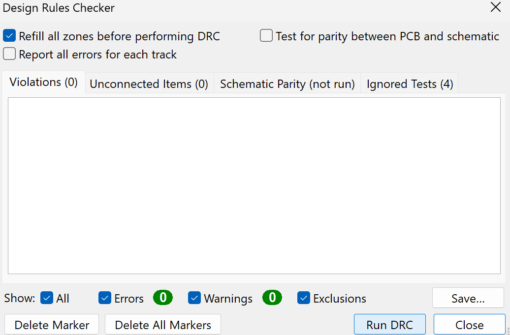

Home
LAB 5
KioCad tutorial: designing a simple LED Circuit
Schematic Layout
A schematic layout was created with a JST connector, resistor and an LED.
Click here to download schematic layout file.
PCB Layout
The schematic layout was updated to pcb and the components where arranged accordingly. A board outline was created.
Click here to download pcb layout file.
3D view
Design Rules Check (DRC)
A DRC was run to check any errors like unconnected tracks or clearance issues. It finished without any error.

Gerber Files
Click here to download Gerber files.